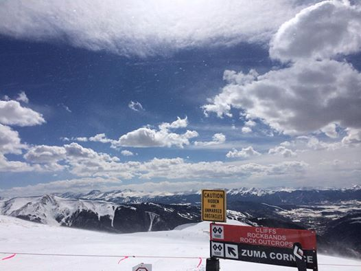

Northstar is a resort conveniently located in Truckee, CA and home to Olympic snowboarder Shaun White. With a village at the base of the resort has shops, convenient stores, and restaurants for everything you need for a weekend in the mountains from a relaxing weekend with friends and family to a more luxorious, pampered weeked. The nearby town of Truckee offers groceries stores, more shops, and accomodations outside of the resort. Northstar is a family friendly ski area with breathtaking views of Lake Tahoe from its summit at Mt. Pluto and the best Bloody Mary's on any mountain!
Canyons Resort, now part of Park City Mountain, is a quick 45 minute drive from Salt Lake City. Located in Park City, Utah, home to the 2002 Winter Olympics, there is as much to do off the slops in Park City and in Utah Olympic Park as there is skiing on the slopes. The local art scene and impressive shopping in Park City will occupy any non-skiers in your crew. When you need to rest your legs and lungs, spend the day exploring Utah Olympic Park. Canyons trails cater to everyone's experience with plenty of greens and blues for the learning and improving skiiers in your group. Black and double black diamonds serve up challenges for those who want to push limits with steeps descents and bumpy moguls. Many swooping trails wind their way through and around on-mountain homes giving skiers a close up of some stunning local properties.

Arapahoe Basin, popularly known as A-Basin, is a legend among locals in Colorado and not to be missed especially if you are heading out Route 70. A-Basin presents challenging terrain with a summit elevation of 13,050’ feet (so stray hydrated!) and over 350” of snowfall annually. There are over 100 trails catering more to the intermediate and expert skiers but a terrific opportunity to test and improve your skills on the mountain with fewer crowds. A day at A-Basin will not disappoint with its terrain, conditions, or tailgating scene after the lifts close.
Vail is perhaps the crown jewel of all of the Vail Resorts. It overlooks Route 70 and is just a couple of hours from Denver. The terrain at Vail is vast and diverse for all types of skiers. The back bowls provide hours of skiing especially with fresh powder and extensive views on bluebird days. Spring skiing at Vail is a special treat with warmer and longer days but still ample opportunity for late season windfalls of powder like the 2014 season. The après-ski scene does not disappoint with plenty of options for libations after you have earned your turns. Bart & Yeti's is a favorite. A few days of runs in mid-April are gift for any diehard skier but perhaps the biggest present is the late season lift and lodging bargains at Vail.